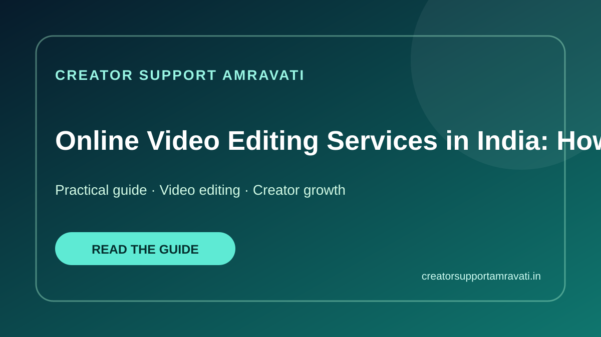

Online video editing services let creators and businesses work with an editor without visiting a studio. The process can be smooth when footage, brief, feedback and file transfer are organised. This guide explains what to check before hiring a remote video editor.
How remote video editing usually works
You share a brief and references, transfer original footage, agree on a quote and timeline, review a draft, send consolidated feedback and receive the final export. Some teams also provide multiple aspect ratios, captions, thumbnails or short clips. Confirm each deliverable in advance.
Choose a secure file-transfer method
Use a reputable cloud storage or transfer service with private links and access permissions. Share only folders needed for the project. Check upload limits and keep a backup of original footage. Avoid public links for confidential interviews or unreleased campaigns.
Write a brief an editor can act on
Include objective, target audience, platform, final duration, aspect ratio, language, brand assets, reference videos, must-keep moments and deadline. Mention whether the editor may select music or stock footage. Explain how names and product details should appear.
Agree on revisions and approvals
Ask when the first draft will arrive and how feedback should be submitted. One consolidated timestamped note is easier to apply than scattered messages. Agree how many revision rounds are included and what counts as a new edit. Assign one person to approve the final video when possible.
Protect privacy and usage rights
Discuss confidentiality, access to raw footage, storage duration, deletion requests, music licences, stock assets and ownership of final deliverables. Confirm permissions for people appearing in videos. Never assume that a track or clip found online is free for commercial use.
What to include in a remote editing agreement
Write down the amount of source footage, target duration, platform, aspect ratios, language, graphics, captions, music responsibility, delivery date and included revision rounds. Specify how additional versions or a changed brief will be priced. Confirm who owns the final exports and whether editable project files are included.
Secure file transfer and backup
Use a reputable file-sharing service with restricted access, expiring links where practical and a clear folder structure. Do not make private client footage publicly accessible. Keep an untouched source backup and agree how long the editor retains working copies after approval. Remove access when the project is complete.
Review the export before approval
Watch the full video on the target device. Check that dialogue is understandable, captions match the speech, names and numbers are correct, graphics stay within safe areas and the file plays without errors. Confirm the requested resolution, frame rate, aspect ratio and file format before publishing.
Frequently asked questions
Can I hire a video editor remotely from another city?
Yes. Remote editing can work when the brief, file transfer, feedback, approvals and delivery terms are clear.
How do I send large raw video files?
Use a secure cloud transfer or agreed storage method with access limited to the project team. Avoid public links for confidential material.
What affects the cost of online video editing?
Raw footage volume, complexity, graphics, subtitles, audio cleanup, number of versions, deadline and revision scope can all affect pricing.
Frequently asked questions
How do I choose a video editing service?
Review relevant samples, agree on deliverables and revisions, confirm timelines and get the scope in writing.
Can I work with an editor online?
Yes. Use a clear brief, secure file transfer and a documented review process.
What should I confirm before paying?
Confirm deliverables, payment milestones, revision policy, licences, turnaround and final file formats.
Topic tags
· · ·
Suggested social hashtags
#videoeditingservicesonline #onlinevideoeditingservicesindia #hirevideoeditoronline #remotevideoediting
Need help with your next video?
Have footage ready for an online edit? Contact Creator Support Amravati with your project type, file duration and delivery deadline.
← Back to all articles · Video editing service · Contact CSA